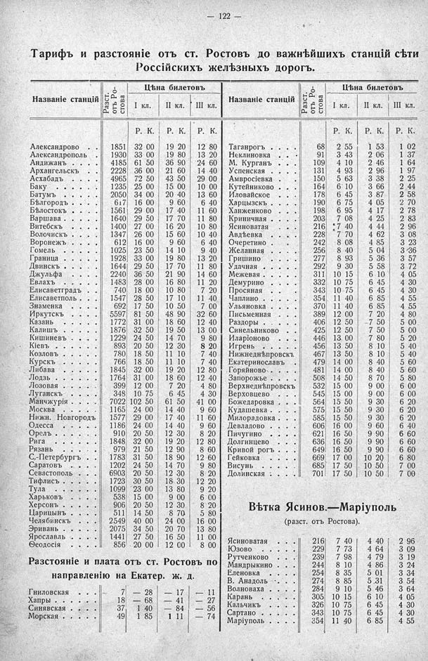

Лист источника 168
Скан

Распознанный текст
— 122 —
Тарифъ и разстояніе отъ ст. Ростовъ до важнѣйшихъ станцій сѣти
Россійскихъ желѣзныхъ дорогъ.
Цѣна билетовъ
Названіе станцій Разст. отъ Ро- стова I кл. II кл. III кл.
Р. К. Р. К. Р. К.
Александрово . . . . 1851 32 00 19 20 12 80
Александрополь . . 1930 33 00 19 80 13 20
Андижанъ . . . . . 4185 61 50 36 90 24 60
Архангельскъ . . . 2228 36 00 21 60 14 40
Асхабадъ . . . . . 4965 72 50 43 50 29 00
Баку . . . . . . . 1235 25 00 15 00 10 00
Батумъ . . . . . . 2050 34 00 20 40 13 60
Бѣлгородъ . . . . . 617 16 00 9 60 6 40
Бѣлостокъ . . . . . 1561 29 00 17 40 11 60
Варшава . . . . . . 1640 29 50 17 70 11 80
Витебскъ . . . . . 1400 27 00 16 20 10 80
Волочискъ . . . . . 1347 26 00 15 60 10 40
Воронежъ . . . . . 612 16 00 9 60 6 40
Гомель . . . . . . 1025 23 50 14 10 9 40
Граница . . . . . . 1928 33 00 19 80 13 20
Двинскъ . . . . . . 1644 29 50 17 70 11 80
Джульфа . . . . . 2240 36 50 21 90 14 60
Евлахъ . . . . . . 1483 28 00 16 80 11 20
Елисаветградъ . . . 740 18 00 10 80 7 20
Елисаветполь . . . 1547 28 50 17 10 11 40
Знаменка . . . . . 692 17 50 10 50 7 00
Иркутскъ . . . . . 5597 81 50 48 90 32 60
Казань . . . . . . 1772 31 00 18 60 12 40
Калишъ . . . . . . 1876 32 50 19 50 13 00
Кишиневъ . . . . . 1229 24 50 14 70 9 80
Кіевъ . . . . . . . 893 20 50 12 30 8 20
Козловъ . . . . . . 780 18 50 11 10 7 40
Курскъ . . . . . . 766 18 50 11 10 7 40
Либава . . . . . . 1845 32 00 19 20 12 80
Лодзь . . . . . . . 1764 31 00 18 60 12 40
Лозовая . . . . . . 399 12 00 7 20 4 80
Луганскъ . . . . . 348 10 75 6 45 4 30
Манчжурія . . . . 7022 102 50 61 50 41 00
Москва . . . . . . 1165 24 00 14 40 9 60
Нижн. Новгородъ 1577 29 00 17 40 11 60
Одесса . . . . . . 1186 24 00 14 40 9 60
Орелъ . . . . . . . 910 20 50 12 30 8 20
Рига . . . . . . . 1848 32 00 19 20 12 80
Рязань . . . . . . 979 21 50 12 90 8 60
С.-Петербургъ . . . 1783 31 50 18 90 12 60
Саратовъ . . . . . 1202 24 50 14 70 9 80
Севастополь . . . 6903 20 50 12 30 8 20
Тифлисъ . . . . . 1723 30 50 18 30 12 20
Тула . . . . . . . 1099 23 00 13 80 9 20
Харьковъ . . . . . 538 15 00 9 00 6 00
Херсонъ . . . . . . 906 20 50 12 30 8 20
Царицынъ . . . . . 511 14 50 8 70 5 80
Челябинскъ . . . . 2549 40 00 24 00 16 00
Эривань . . . . . 2075 34 50 20 70 13 80
Ярославль . . . . . 1441 27 50 16 50 11 00
Ѳеодосія . . . . . 856 20 00 12 00 8 00
Разстояніе и плата отъ ст. Ростовъ по
направленію на Екатер. ж. д.
Гниловская . . . . 7 — 28 — 17 — 11
Хапры . . . . . . 18 — 68 — 41 — 27
Синявская . . . . 37 1 40 — 84 — 56
Морская . . . . . 49 1 85 1 11 — 74
Цѣна билетовъ
Названіе станцій Разст. отъ Ро- стова I кл. II кл. III кл.
Р. К. Р. К. Р. К.
Таганрогъ . . . . 68 2 55 1 53 1 02
Неклиновка . . . 91 3 43 2 06 1 37
М. Курганъ . . . 109 4 10 2 46 1 64
Успенская . . . . 131 4 93 2 96 1 97
Амвросіевка . . . 150 5 63 3 38 2 25
Кутейниково . . . 164 6 10 3 66 2 44
Иловайское . . . 178 6 45 3 87 2 58
Харцызскъ . . . . 190 6 75 4 05 2 70
Ханженково . . . 198 6 95 4 17 2 78
Криничная . . . . 203 7 08 4 25 2 83
Ясиноватая . . . . 216 7 40 4 44 2 96
Авдѣевка . . . . 228 7 70 4 62 3 08
Очеретино . . . . 242 8 08 4 85 3 23
Желанная . . . . 256 8 40 5 04 3 36
Гришино . . . . . 277 8 93 5 36 3 57
Удачная . . . . . 292 9 30 5 58 3 72
Межевая . . . . . 311 10 15 6 10 4 05
Демурино . . . . 332 10 75 6 45 4 30
Просяная . . . . 343 10 75 6 45 4 30
Чаплино . . . . . 354 11 40 6 85 4 55
Ульяновка . . . . 370 11 40 6 85 4 55
Письменная . . . 389 12 00 7 20 4 80
Раздоры . . . . . 406 12 50 7 50 5 00
Синельниково . . 425 12 50 7 50 5 00
Иларіоново . . . . 446 13 00 7 80 5 20
Игрень . . . . . 456 13 50 8 10 5 40
Нижнеднѣпровскъ 467 13 50 8 10 5 40
Екатеринославъ . 479 14 00 8 40 5 60
Горяйново . . . . 481 14 00 8 40 5 60
Запорожье . . . . 508 14 50 8 70 5 80
Верхнеднѣпровскъ 532 15 00 9 00 6 00
Верховцево . . . 545 15 00 9 00 6 00
Божедаровка . . . 564 15 50 9 30 6 20
Кудашевка . . . . 575 15 50 9 30 6 20
Милорадовка . . . 585 15 50 9 30 6 20
Девладово . . . . 606 16 00 9 60 6 40
Пичугино . . . . 621 16 50 9 90 6 60
Долгинцево . . . 636 16 50 9 90 6 60
Кривой рогъ . . . 649 16. 50 9 90 6 60
Гейковка . . . . 669 17 00 10 20 6 80
Висунь . . . . . 685 17 50 10 50 7 00
Долинская : . . . 701 17 50 10 50 7 00
Вѣтка Ясинов.—Маріуполь
(разст. отъ Ростова).
Ясиноватая . . . . 216 7 40 4 40 2 96
Юзово . . . . . . 229 7 73 4 64 3 09
Рутченково . . . . 239 7 98 4 79 3 19
Мандрыкино . . . 244 8 10 4 86 3 24
Еленовка . . . . 254 8 35 5 01 3 34
В. Анадоль . . . . 274 8 85 5 31 3 54
Волноваха . . . . 284 9 10 5 46 3 64
Карань . . . . . 305 10 15 6 10 4 05
Кальчикъ . . . . 326 10 75 6 45 4 30
Сартано . . . . . 343 10 75 6 45 4 30
Маріуполь . . . . 354 11 40 6 85 4 55